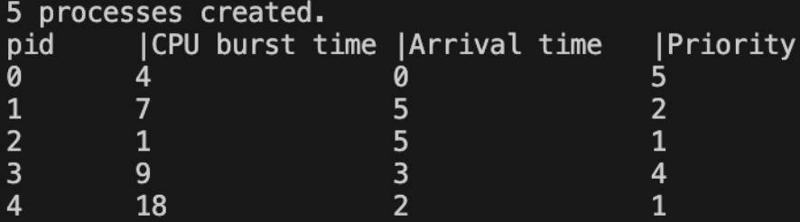

CPU Scheduler 구현 in C
Contents
CPU는 한 번에 하나의 작업만 처리할 수 있기 때문에, 여러 개의 프로세스가 실행 대기 중일 때는 OS가 각 프로세스들을 어떤 순서로 실행할지 결정합니다. 이를 **CPU 스케줄링(CPU Scheduling)**이라고 합니다. 이 글에서는 스케줄링 알고리즘들을 살펴보고 프로세스 생성부터 알고리즘 별 실행결과 비교까지 구현한 과정을 기록했습니다.
CPU 스케줄링 알고리즘
- FCFS
- First Come, First Served를 뜻하는 FCFS는 이름과 같이 프로세스들을 도착한 순서대로(arrival time) 스케줄링하는 가장 기본 알고리즘입니다.
- SJF
- SJF는 Shortest Job First의 약자로, 도착한 프로세스 중 실행 시간(burst time)이 적은 것을 먼저 실행합니다.
- Preemptive SJF의 경우, 어떤 프로세스가 실행되는 도중 더 실행 시간이 짧은 프로세스가 도착하면 preemption이 일어나고 해당 프로세스는 실행순서가 맨 뒤로 가게 됩니다. Preemption이 일어난 프로세스는 remaining time을 기준으로 비교합니다.
- Priority
- 프로세스는 각 프로세스의 중요성에 따라 Priority를 가질 수 있습니다. Priority 알고리즘은 도착한 프로세스 중 Priority 값이 높은 순서대로 실행합니다.
- Preemptive Priority의 경우 프로세스가 실행되는 도중 더 priority가 높은 프로세스가 도착하면 preemption이 일어나고 해당 프로세스는 실행순서가 맨 뒤로 가게 됩니다.
- Round Robin
- Round Robin 알고리즘은 프로세스를 특정한 time quantum만큼 실행한 후, 그 시간동안 프로세스가 다 끝나지 않으면 중단시키고(preemption) 다음 프로세스를 실행합니다. 기본적인 실행 순서는 FCFS와 같이 arrival time을 따릅니다.
- time quantum의 크기가 너무 작아지게 되면 preemption이 자주 일어나게 context switching에 대한 overhead가 발생합니다. 반면 너무 커지게 되면 FCFS와 동일해집니다.
- SJF, Priority, Round Robin처럼 preemption이 가능한 알고리즘들은 프로세스의 실행순서가 중간에 바뀌기 때문에 큐로 관리하는 것이 적합합니다.
CPU 스케줄러 구현
프로세스 생성
typedef struct {
int pid;
int arrival_time;
int cpu_burst_time;
int remaining_time;
int priority;
int start_time;
int waiting_time;
int complete_time;
int turnaround_time;
bool is_completed;
} Process;- 프로세스를 구조체로 정의합니다.
void create_process(Process *processes, int num_process, int seed) {
srand(seed);
for (int i=0; i < num_process; i++) {
processes[i].pid = i;
processes[i].arrival_time = rand() % 6;
processes[i].cpu_burst_time = rand() % 20 + 1;
processes[i].remaining_time = processes[i].cpu_burst_time;
processes[i].priority = rand () % num_process + 1;
processes[i].is_completed = false;
}
printf("%d processes created.\n",num_process);
printf("pid\t|CPU burst time\t|Arrival time\t|Priority\t\n");
for (int i=0; i < num_process; i++) {
printf("%d\t%d\t\t%d\t\t%d\t\n", processes[i].pid, processes[i].cpu_burst_time, processes[i].arrival_time, processes[i].priority);
}
}- 각 프로세스마다 arrival time, cpu burst time, priority를 rand() 함수로 랜덤 생성한 후 출력합니다. 
{kind=link}
CPU 스케줄링 알고리즘
-
FCFS
int compare_by_arrival(const void *a, const void *b){ // arrival time으로 정렬 Process *p1 = (Process *)a; Process *p2 = (Process *)b; // 음수면 순서 p1,p2 // 양수면 순서 p2,p1 return p1->arrival_time - p2->arrival_time; } void fcfs(Process *processes, int num_process) { // 복사해서 정렬 Process processes_copy[MAX_PROCESS]; memcpy(processes_copy, processes, sizeof(Process)*num_process); qsort(processes_copy, num_process, sizeof(Process), compare_by_arrival); Queue ready_queue; Queue wait_queue; init_queue(&ready_queue); init_queue(&wait_queue); for (int i=0; i < num_process; i++) { enqueue(&ready_queue, &processes_copy[i]); } int current_time=0; while (!is_empty(&ready_queue)) { Process *p = dequeue(&ready_queue); if (current_time<p->arrival_time){ current_time=p->arrival_time; } p->start_time=current_time; p->waiting_time=current_time-p->arrival_time; current_time+=p->cpu_burst_time; p->complete_time=current_time; p->turnaround_time=p->complete_time-p->arrival_time; } }- 프로세스를 정렬한 후 순서대로 실행합니다.
-
Non-Preemptive SJF
void pre_sjf(Process *processes, int num_process) { // 복사 Process processes_copy[MAX_PROCESS]; memcpy(processes_copy, processes, sizeof(Process)*num_process); // 시간별 실행된 프로세스 저장 Process *executed_timeline[MAX_TIME]; int current_time=0; int num_completed=0; while(num_completed < num_process){ int min_remain_idx=-1; int min_remaining_time=MAX_CPU_BURST_TIME; // bool is_preempted=false; for (int i=0; i<num_process; i++) { if (processes_copy[i].arrival_time > current_time){ continue; } if(!processes_copy[i].is_completed && processes_copy[i].remaining_time < min_remaining_time) { min_remaining_time = processes_copy[i].remaining_time; min_remain_idx=i; } } if (min_remain_idx==-1) { executed_timeline[current_time]=NULL; current_time++; continue; } Process *curr_p=&processes_copy[min_remain_idx]; if (curr_p->remaining_time==curr_p->cpu_burst_time) { curr_p->start_time=current_time; } curr_p->remaining_time--; executed_timeline[current_time]=curr_p; current_time++; if (curr_p->remaining_time==0) { num_completed++; curr_p->is_completed=true; curr_p->complete_time=current_time; curr_p->turnaround_time=curr_p->complete_time-curr_p->arrival_time; curr_p->waiting_time=curr_p->turnaround_time-curr_p->cpu_burst_time; } } }- 매 시간마다 cpu burst time이 최소인 프로세스를 찾아서 해당 프로세스를 실행
-
Preemptive Priority
void pre_priority(Process *processes, int num_process) { // 복사 Process processes_copy[MAX_PROCESS]; memcpy(processes_copy, processes, sizeof(Process)*num_process); // 시간별 실행된 프로세스 저장 Process *executed_timeline[MAX_TIME]; int current_time=0; int num_completed=0; while(num_completed < num_process){ if (current_time >= MAX_TIME*10) { printf("ERROR: current_time exceeded MAX_TIME (%d)\n", MAX_TIME*10); exit(1); // 또는 break; } int min_priority_idx=-1; int min_priority=num_process+1; // bool is_preempted=false; for (int i=0; i<num_process; i++) { if (processes_copy[i].arrival_time > current_time){ continue; } // 현재 시점에서 priority가 작은 것 선택, 만약에 같다면 먼저 도착한 것으로 if(!processes_copy[i].is_completed && (processes_copy[i].priority < min_priority || (processes_copy[i].priority == min_priority && processes_copy[i].arrival_time < processes_copy[min_priority_idx].arrival_time))) { min_priority = processes_copy[i].priority; min_priority_idx=i; } } if (min_priority_idx==-1) { executed_timeline[current_time]=NULL; current_time++; continue; } Process *curr_p=&processes_copy[min_priority_idx]; if (curr_p->remaining_time==curr_p->cpu_burst_time) { curr_p->start_time=current_time; } curr_p->remaining_time--; executed_timeline[current_time]=curr_p; current_time++; if (curr_p->remaining_time==0) { num_completed++; curr_p->is_completed=true; curr_p->complete_time=current_time; curr_p->turnaround_time=curr_p->complete_time-curr_p->arrival_time; curr_p->waiting_time=curr_p->turnaround_time-curr_p->cpu_burst_time; } } }- 매 시간마다 Priority가 가장 큰 프로세스를 찾아서 해당 프로세스를 실행
-
Round Robin
void round_robin(Process *processes, int num_process) { Process processes_copy[MAX_PROCESS]; memcpy(processes_copy, processes, sizeof(Process) * num_process); Process *executed_timeline[MAX_TIME]; bool enqueued[MAX_PROCESS] = { false }; int current_time=0; int num_completed=0; Queue ready_queue; init_queue(&ready_queue); while(num_completed < num_process ) { // == for (int i=0; i<num_process; i++) { if (processes_copy[i].arrival_time == current_time &&!enqueued[i]) { if (is_full(&ready_queue)) { printf("full"); } enqueue(&ready_queue, &processes_copy[i]); enqueued[i]=true; } } if (is_empty(&ready_queue)) { printf("empty"); executed_timeline[current_time]=NULL; current_time++; continue; } Process *curr_p = dequeue(&ready_queue); if (curr_p->remaining_time == curr_p->cpu_burst_time) { curr_p->start_time = current_time; } int time_quantum=TIME_QUANTUM; while(time_quantum>0 && curr_p->remaining_time>0){ executed_timeline[current_time]=curr_p; time_quantum--; curr_p->remaining_time--; for (int i = 0; i < num_process; i++) { if (processes_copy[i].arrival_time == current_time) { if (is_full(&ready_queue)) { printf("full"); } enqueue(&ready_queue, &processes_copy[i]); enqueued[i]=true; } } current_time++; } if (curr_p->remaining_time==0 && !curr_p->is_completed){ num_completed++; curr_p->is_completed=true; curr_p->complete_time=current_time; curr_p->turnaround_time=curr_p->complete_time-curr_p->arrival_time; curr_p->waiting_time=curr_p->turnaround_time-curr_p->cpu_burst_time; } else { enqueue(&ready_queue,curr_p); } } }- 큐에서 프로세스를 꺼내서 time_quantum만큼 실행하면서 완료되지 않은 프로세스는 preemptiong하고 다시 enqueue합니다.
평가
-
gantt chart : 스케줄러가 시간에 따라 어떤 프로세스를 실행했는지 보여줌
ex) | PID 1 (0~2) | PID 2 (2~5) | IDLE (5~6) | PID 3 (6~9) |
-
Average Turnaround Time: 프로세스가 도착해서 완전히 끝날 때까지 걸린 평균 시간
turnaround_time = complete_time - arrival_time -
Average Waiting Time: 프로세스가 ready queue에서 대기한 평균 시간
waiting_time = turnaround_time - cpu_burst_timewaiting_time = start_time - arrival_time(preemption 없는 경우) -
평가 결과
PID CPU Burst Time Arrival Time Priority 0 4 0 5 1 7 5 2 2 1 5 1 3 9 3 4 4 18 2 1 다음의 프로세스에 대한 각 알고리즘별 평가 결과는 다음과 같습니다.
{kind=link}
{kind=link}
{kind=link}
{kind=link}